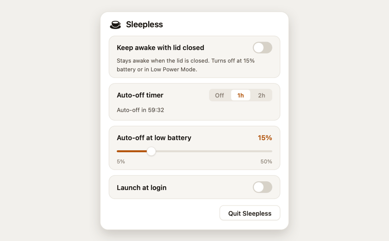

Sleepless keeps your MacBook awake with the lid closed, on battery, with no external display. One native menu-bar switch, with an auto-off timer and a battery-floor cutoff so you never drain it flat.

The one that actually does it
Most keep-awake apps (KeepingYouAwake, Caffeine, Theine, and the built-in caffeinate) ride on macOS power assertions. Assertions stop the idle timer, but they can't override the hardware lid-close trigger, so a closed lid still sleeps the Mac. The KeepingYouAwake maintainer says it outright: "caffeinate doesn't support this." The one setting that overrides lid-close sleep is pmset disablesleep. Sleepless toggles exactly that, reads the value back so the menu bar never lies, and wraps it in safety nets.
Small on purpose
Click the coffee cup in the menu bar and flip the toggle. Empty cup is off, full cup is awake, full cup with a dot is awake on battery with the safety net live.
Keep awake for 1 or 2 hours with a live countdown, then it turns itself off. In memory only, so quitting or rebooting clears it.
Pick a floor from 5 to 50% (default 15%). On battery, it turns itself off before you run flat.
On battery, if Low Power Mode is on, Sleepless steps aside and lets the Mac sleep.
Just the lid closed, on battery. No external monitor, no dummy HDMI plug, no clamshell adapter.
One AppKit file with SF Symbols. No Dock icon, no background daemon, no kext, no dependencies.
How it works
Sleepless toggles pmset disablesleep, which flips the kernel's SleepDisabled flag, then reverts it at your battery floor, in Low Power Mode, or when the timer ends. A reboot also resets it. Because a GUI app can't type a password, the installer adds a tightly scoped /etc/sudoers.d rule (root-owned, 0440) that permits exactly two commands and nothing else:
<you> ALL=(root) NOPASSWD: /usr/bin/pmset -a disablesleep 0, /usr/bin/pmset -a disablesleep 1 |
Full threat model, the undocumented-but-real disablesleep evidence, and how to verify a download: SECURITY.md and AUDIT.md.
As of 2026-06
| Sleepless | Amphetamine | KeepingYouAwake | caffeinate | |
|---|---|---|---|---|
| Awake, lid closed, no monitor | Yes ¹ | Flaky ² | No ³ | No |
| On battery | Yes | Yes | Lid open | Partial ⁴ |
| Auto-off timer | Yes | Yes | Yes | No |
| Auto-off on low battery | Yes | Yes | Yes | No |
| Open source | MIT | App Store | MIT | Apple |
| Cost | Free | Free | Free | Free |
¹ Sleepless uses pmset disablesleep, the mechanism built for lid-close, and reads the flag back so the UI reflects reality; behavior on any keep-awake tool is hardware and macOS-version dependent. ² Amphetamine documents closed-display mode but is widely reported to fail on Apple Silicon when the power source changes (Amphetamine-Enhancer #28); the app itself is closed source. ³ KeepingYouAwake cannot keep the lid closed by design, since it wraps caffeinate (issue #66). ⁴ caffeinate -i runs on battery; -s is AC-only.
Questions
Install Sleepless, click the coffee cup in the menu bar, flip the switch on, and close the lid. It keeps the Mac awake on battery with no external display, using pmset disablesleep. No dummy HDMI plug or clamshell adapter is needed.
Those tools are built on macOS power assertions, which stop the idle timer but cannot override the hardware lid-close trigger. KeepingYouAwake wraps caffeinate, which its maintainer confirms cannot do lid-close. pmset disablesleep, which Sleepless uses, is a lower-level setting that can.
pmset -a disablesleep 1 still sets the SleepDisabled flag on Apple Silicon and, in firsthand reports, keeps a MacBook awake with the lid closed on battery, but Apple does not officially document the setting, so its exact behavior can vary by model and macOS version. Verify it with pmset -g | grep SleepDisabled. Most claims that it stopped working describe caffeinate, a different mechanism.
It is safe for light, unattended work like downloads, syncs, or a hotspot. Heavy sustained load with the lid fully closed reduces airflow, so use judgement there. Sleepless turns itself off at the floor you set and in Low Power Mode, and the auto-off timer caps how long it stays on.
It needs one tightly scoped sudo grant (two exact pmset commands, nothing else) so a GUI app can flip the setting without a password prompt. There is no kernel extension and no background daemon. The whole app is a single AppKit file.
Yes. Switch Sleepless on, set a battery floor, close the lid, and an agent run, build, render, or training job keeps going. Plug in for an all-nighter, or stay on battery with a floor and timer so it stops itself before the battery runs low.